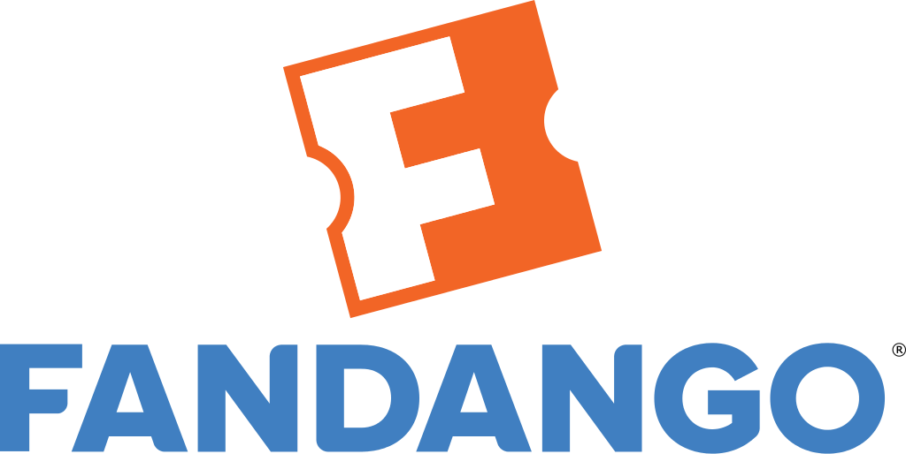
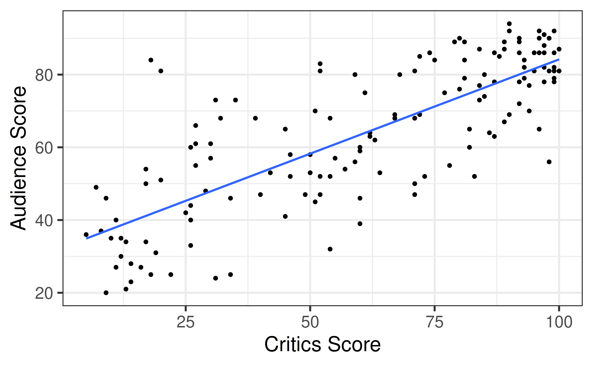
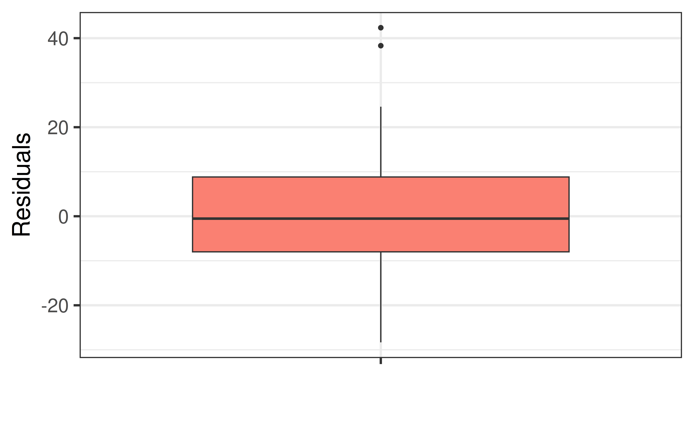
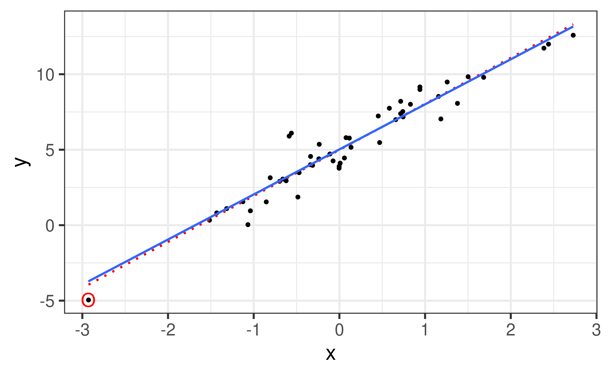
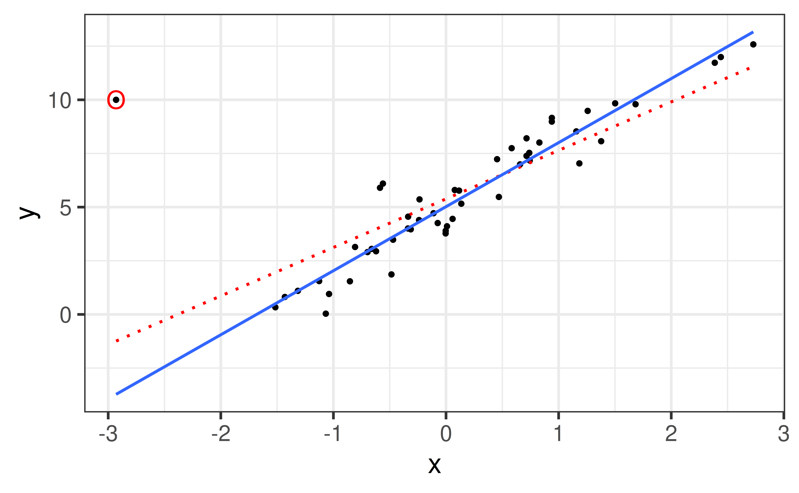
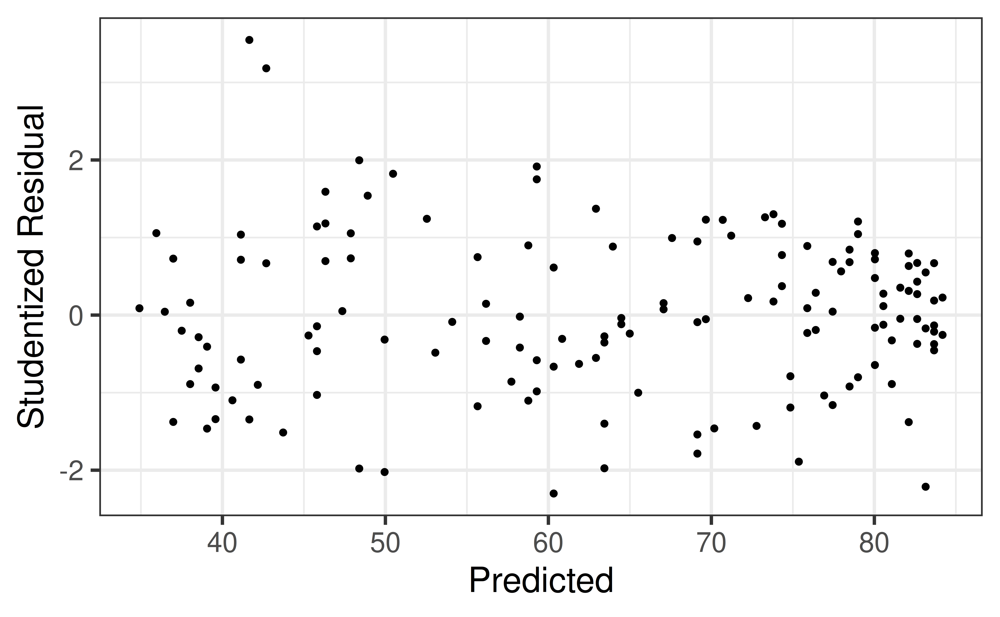
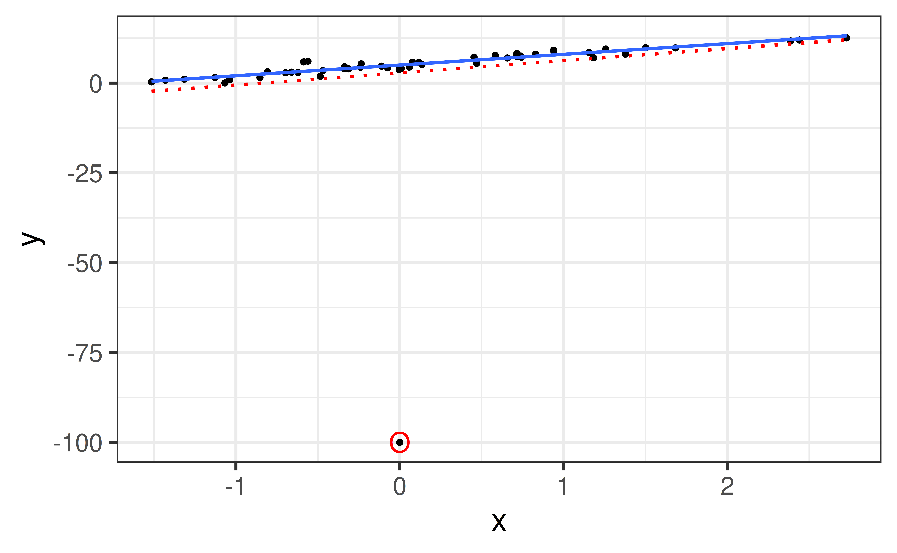
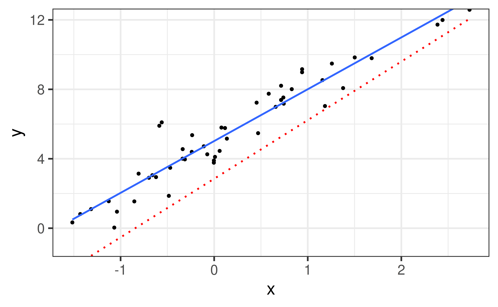

# load packages
library(tidyverse) # for data wrangling and visualization
library(broom) # for formatting model output
library(ggformula) # for creating plots using formulas
library(scales) # for pretty axis labels
library(knitr) # for pretty tables
library(moderndive) # for house_price dataset
library(fivethirtyeight) # for fandango dataset
library(kableExtra) # also for pretty tables
library(patchwork) # arrange plots
# set default theme and larger font size for ggplot2
ggplot2::theme_set(ggplot2::theme_bw(base_size = 20))SLR: Outliers
Computational set up
Outliers
Types of “Unusual” Points in SLR
- Outlier: a data point that is far from the regression line
- Influential point: a data point that has a large effect on the regression fit
. . .
- How do we measure “far”?
- How do we measure “effect on the fit”?
Detecting Unusual Cases: Overview
- Compute residuals
- Plots of residuals
- boxplot, scatterplot, normal plot
- Leverage
- unusual values for the predictors
Example: Movie scores
- Data behind the FiveThirtyEight story Be Suspicious Of Online Movie Ratings, Especially Fandango’s
- In the fivethirtyeight package:
fandango - Contains every film released in 2014 and 2015 that has at least 30 fan reviews on Fandango, an IMDb score, Rotten Tomatoes critic and user ratings, and Metacritic critic and user scores

Data prep
- Rename Rotten Tomatoes columns as
criticsandaudience - Rename the dataset as
movie_scores
data("fandango")
movie_scores <- fandango |>
rename(critics = rottentomatoes,
audience = rottentomatoes_user)Example: Movie Scores
Code
movie_scores |>
gf_point(audience ~ critics) |>
gf_lm() |>
gf_labs(x = "Critics Score",
y = "Audience Score")
Boxplot of Residuals
movie_fit <- lm(audience ~ critics, data = movie_scores)
movie_fit_aug <- augment(movie_fit)
gf_boxplot(.resid ~ "", data = movie_fit_aug,
fill = "salmon", ylab = "Residuals", xlab = "")
- Dots (outliers) indicate data points more than 1.5 IQRs above (or below) quartiles
What to do with an outlier?
- Look into it
- If something is unusual about it and you can make a case that it is not a good representation of the population you can throw it out
- If not and the value is just unusual, keep it
Influence vs. Leverage
- High Influence Point: point that DOES impact the regression line
- High Leverage Point: point with “potential” to impact regression line because \(X\)-value is unusual
High Leverage, Low Influence

High Leverage, High Influence

Low Leverage, Low Influence

Low Leverage, High Influence

Low Leverage, High Influence

Recap
- Outliers
- Leverage
- Influence
- Used plots of residuals to diagnose outliers
- Spend the rest of class analyzing the outliers with your housing data.